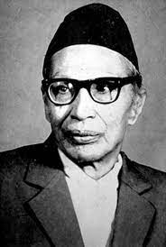

 Siddicharan Shrestha: A Revolutionary Era Of Nepali Literature Siddhicharan Shrestha is known as Yugkavi, poet of the era. This is a title that best suited the legendary poet of Nepal. He heralded a new era in the Nepali literature with a strong sense of patriotism and love for nature. He was born in Okhaldhunga, a north-eastern hilly district, on Jestha 9, 1969 BS as a son of Bishnucharan Shrestha and mother Nirkumari Shrestha. During 1970s, opportunity for learning was rare in Nepal as schools were not available in villages. Even if he came to Kathmandu in his early childhood, he did not get adequate opportunity for learning as attaining knowledge was not duly appreciated during that period. His education was limited to school level. Siddicharan’s father Bishnucharan was also a writer and he had a great love for Nepali literature. Bishnucharan’s " Sumati" is the first original fiction ever written in Nepali language. This speaks of the fact that Siddicharan grew up in the literary environment at home and got inspiration from his father for writing and devoting in the promotion of Nepali literature. But, unlike his father, he was a revolutionary and progressive writer, for which he was once put behind bar. Although born in Okhaldhunga, Siddicharan Shrestha moved to Kathmandu at the early age of eight and spent whole of his life in Kathmandu. But his love for nature kept Okhaldhunga always in his mind and heart. Okhaldhunga is bestowed with natural beauty that had left a deep mark on young Siddicharan that came out in the form of poem called "Okhaldhunga". In this poem, the poet has described Okhaldhunga as a heaven and Kathmandu as a desert. In a stanza of this poem, he says: "Floating along the waves of destiny, How I landed on this desert, But have no regret; As the sketch of your beauty Is deeply painted in the core of the heart, You, my dearest Okhaldhunga". He had seen both the rural and urban life. The suppression, exploitation and discrimination people had undergone had had a great influence in his mind right from his childhood. Moreover, the revolutionary movements that had brewed in Nepal and India during his time had attracted his mind to the radical political and social changes. His revolutionary feelings were markedly visible in his writings. As revolutionary poet and writer, Siddicharan has given his own introduction in a poetic work this way: "I am Nepali skilled to climb the hard rock; Am kind enough to poor and disadvantaged even if they are foes; Always ready to suck the hot and red blood of the enemies; Be careful with the Khukuri (sharp-edged knife) I love the most." This poem is written in a verse with typical meter with the strong word and revolutionary sense that has been an inspiration for many to devote to revolution that had started germinating in the country against the Rana’s family oligarchy. And he kept on firing crusade through pen for generating political and social awareness in the society. This revolutionary zeal continued until the political change in 1951. But the political change in 1951 that brought about democracy and open society also had a big change in Siddicharan’s life and work. The writing after 1951 were clearly different as the writer appeared more concerned with the quality and artistic aspect. Laxmi Prasad Devkota and Lekhnath Poudyal were his contemporaries. Already inherited a gene of writing from his father, he was further inspired by the literary works of Devkota and Poudyal. But his real literary guru was Riddhi Bahadur Malla. He always felt like writing poems when his parents and relatives read and recited Bhanubhakta Acharya’s Ramayana and some poems of Hom Nath. But this association with Riddhi Bahadur Malla made him a poet as Malla often guided and encouraged Siddicharan to write more. Siddicharan started writing poems as early as in 1984 BS. The devastation caused by the great earthquake in 1990 BS touched his heart and wrote a poem called "Bhuichalo" (earthquake), which was published in the Gorkhapatra. His literary journey began with the publication of this poem in the Gorkhapatra. In this poem, he has artistically portrayed the magnitude of earthquake and conveyed pains, plights and sufferings of the victims of the earthquake. It is also a symbolic poem that compared the life of the people and situation during the Rana period with the devastating earthquake. Later, several of his poems were published in other literary magazines like "Sharada" and "Nebula." Siddicharan Shrestha was "a source of inspiration for the young generation of that time" who fought against the autocratic Rana regime, and overthrew it following which the people’s rule was established in Nepal. Although his imaginary power and artistic genre did not match with his contemporaries like Devkota, Poudyal and Balkrishna Sama, Siddicharan ranks equally high along with these three literary luminaries because of his unique style and continued dedication. As his writing and literary works epitomizes the mentality, sentiment and outlook of his time, he is aptly called Yugkabi. Siddicharan was self-made personality and his continuous dedication and hard work paid off. As a writer he worked in "Sharada", a leading literary magazine of that time, the Gorkhapatra and Khabar newspaper. His writing career got a boost by his association with these papers and magazines. As he was the editor of the Sharada and Gorkhapatra, he had no problem in publishing his poems. Soon he was established as a literary figure in the contemporary Nepali society. He later was chosen as a life-time member of the Nepal Academy ( then Royal Nepal Academy). His poems touch human sentiment and champion the beauty of nature. His literary works are artistically woven binding together the mental faculty and nature. There is a strong and live link between human sentiment and nature’s language. The streams of ideas, thinking and mental conflict are skillfully portrayed in his famous epic "Urbasi". His works are, thus, at par with the world class literature. Personal feelings, human sentiments and societal things are presented poetically and artistically, which reflect the high quality of Siddicharan’s characteristics. His poems carry universal values and relevance. Some of his poems are equally relevant and heart-touching at present in the same way they carried the meaning and values when they were written. For him, races and castes, which used to be strictly followed in the contemporary society, were absurd and valued a little. He launched a crusade against exploitation, discrimination and superstition. His advocated an egalitarian society where freedom from fear and freedom from want were best ensured. His message thus is so loud and clear that his poetic works created a sense of stir in the society. This brought a wrath of the autocratic Rana rulers. Human values, individual liberty and equality are basic tenets that can be found in his writing. "Mero Pratibimba ( My Reflection) truly reflects his belief in equitable society. The political philosophy that was in vogue during that period had deeply influenced the poet, which were visible in his works. More importantly, the political and social crusade that Mahatma Gandhi had launched in India had a big influence on him. Patriotism is well entrenched in his poetic work. Siddicharan is the poet whose contribution in Nepali literature is huge. He has added one more brick to Romantic Movement in Nepali poetry. Kopila, a collection of his poems, is an example of romantic aspect and love for nature in Shiddicharan’s writing. Another collection of poems is " Mero Pratibimba" which reflects poet’s revolutionary zeal and appeal, whereas the famous epic " Urbasi" portrays poet’s stream of mental conflict. In the poem "Barsa", Siddicharn has written " peace is not possible without revolution". When this poem was published in 1997, the poet was declared a ‘traitor’ by the Rana rulers and was served ten years jail term. But he was released in five years. During his stay in prison, he wrote a reminiscence of jail years. The Rana rulers confiscated several poems and literary works and they were believed to have been destroyed. In fact, some of his works were destroyed before they were published. Although he is basically a poet, he has made contribution in other areas of writing like essays, stories and plays. In recognition and honour of his literary contribution, Siddicharan Shrestha was conferred with "Kabiratna" title by Chwasapasa literary organization. Nepal Academy honoured him with the prestigious "Prithivi Academic Award", the then highest academic award in Nepal. He died in 2049 that marked the end of an era in Nepali literature. His works: Poetry: He has published several collections of his poems. They are: Kopila", Mero Pratibimba, "Tirmir Tara" "Siddhicharan’s Pratinidhi Kabita" and "Matwala", Siswa Dhuswa (in Newari), Baglibadh (poetic play). Epic: Urbasi, Mangalman, Aanssu, Junkiria. Reminiscence: Karagar Ka Samjhana ( Recollection of Prison Days). Apart from above mentioned works, he has written several essays, plays and stories too. His poems deal with love of nature, romantic feelings, human sentiment, strong sense of patriotism, rebellion against the existing social, political and cultural distortion and discrimination.